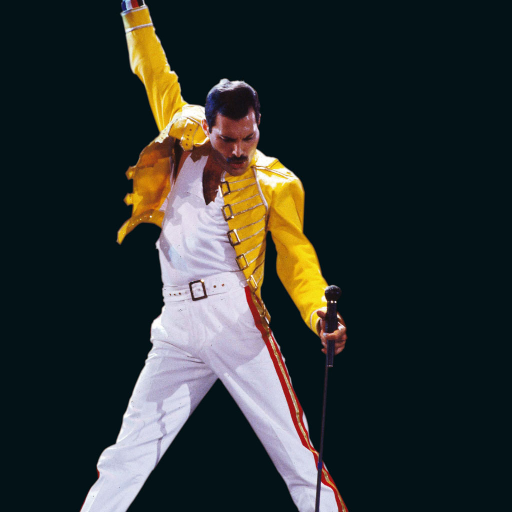

Freddie Merkurius Penyanyi dan penulis lagu Inggris
ditulis oleh Erik Adia Meka. pada 3 November 2024.
Freddie Mercury (lahir 5 September 1946, Stone Town, Zanzibar [sekarang di Tanzania]—meninggal 24 November 1991, Kensington, London, Inggris) adalah seorang penyanyi dan penulis lagu rock Inggris yang memiliki pertunjukan flamboyan dan vokal yang sangat lincah, paling terkenal untuk bandQueen , menjadikannya salah satu vokalis rock paling dinamis . Bulsara lahir dari orang tua Parsi yang beremigrasi dari India ke Zanzibar , tempat ayahnya bekerja sebagai juru tulis untuk pemerintah Inggris. Sebagai seorang anak, Bulsara dikirim ke sekolah asrama di Panchgani, negara bagian Maharashtra , India. Memiliki bakat seni sejak usia dini, ia membentuk sebuah band di sana dan bermain piano . Ketika Zanzibar menjadi bagian dari negara Tanzania yang merdeka pada tahun 1964, Bulsara pindah bersama keluarganya ke Feltham, Inggris . Ia kemudian belajar seni grafis dan desain di Ealing Technical College and School of Art (sekarang bagian dari University of West London), lulus pada tahun 1969. Dipengaruhi oleh gaya blues yang keras dari artis rock seperti Cream dan Jimi Hendrix , Bulsara mulai bernyanyi dengan band-band di London . Ia juga berteman dengan gitarisBrian May dan drummerRoger Taylor dari band Smile, dan pada tahun 1970, ketika penyanyi utama Smile keluar, Bulsara menggantikannya. Ia segera mengubah nama grup menjadi Queen dan namanya sendiri menjadi Freddie Mercury. Pemain bass John Deacon bergabung tahun berikutnya. Menggabungkan unsur-unsur heavy metal dan glam rock , band ini memulai debutnya dengan rekaman Queen (1973), yang diikuti oleh Queen II (1974). Meskipun memadukan harmoni vokal yang megah dan permainan gitar virtuoso yang mengagumkan, Queen awalnya gagal menarik perhatian di luar Inggris . Album iniNamun, Sheer Heart Attack (1974) melesat naik ke tangga lagu internasional, danA Night at the Opera (1975) bahkan terjual lebih baik. Pendekatan ambisius band ini terhadap penulisan lagu dan produksi studio dilambangkan oleh singel tiruan opera di album terakhir “Bohemian Rhapsody ,” salah satu dari sejumlah komposisi Queen yang sebagian besar ditulis oleh Mercury. Lagu tersebut bertahan selama sembilan minggu di puncak tangga lagu singel Inggris, dan film promosi yang menyertainya membantu industri musik mengenali masa depannya dalam video. Kesuksesan spektakuler menyusul pada tahun 1977 dengan “Kami Adalah Juara ” dan “We Will Rock You ”—yang menjadi lagu kebangsaan di acara olahraga di Inggris dan Amerika Serikat .

Pada awal tahun 1980-an Queen telah menjadi fenomena internasional, menarik perhatian khusus untuk pertunjukannya yang dipentaskan secara rumit di tempat-tempat yang sangat besar . Berlenggak-lenggok di atas panggung dengan kostum yang luar biasa, Mercury dengan mudah menarik perhatian puluhan ribu penonton. Meskipun kekayaan komersial Queen mulai berkurang pada pertengahan dekade, band ini bisa dibilang mencapai puncaknya sebagai pertunjukan langsung dengan penampilan yang luar biasa di konser amal.Live Aid pada tahun 1985. Pada tahun yang sama Mercury merilis rekaman solo Mr. Bad Guy , yang mengambil inspirasi musik dari disko . Mercury kemudian muncul di soundtrackMusikal fiksi ilmiah Dave Clark Time (1986) dan bekerja sama dengan penyanyi sopran Spanyol Montserrat Caballé untuk album semi-operatif Barcelona (1988). Pada tahun 1991, Mercury mengumumkan bahwa ia telah didiagnosis mengidap AIDS . Ia meninggal sehari kemudian akibat komplikasi yang berkaitan dengan penyakit tersebut. Hingga sesaat sebelum kematiannya, Mercury terus melakukan rekaman dengan Queen, dan ia secara anumerta ditampilkan dalam album terakhir band tersebut, Made in Heaven (1995). Waktunya bersama Queen dipentaskan dalam film larisBohemian Rhapsody (2018). MeskipunRami Malek memenangkan Academy Award untuk penampilannya sebagai Mercury dalam film Bohemian Rhapsody yang dikritik karena penyajiannya yang dibuat-buat tentang kehidupan Mercury yang rumit, khususnya fluiditas seksualnya.
